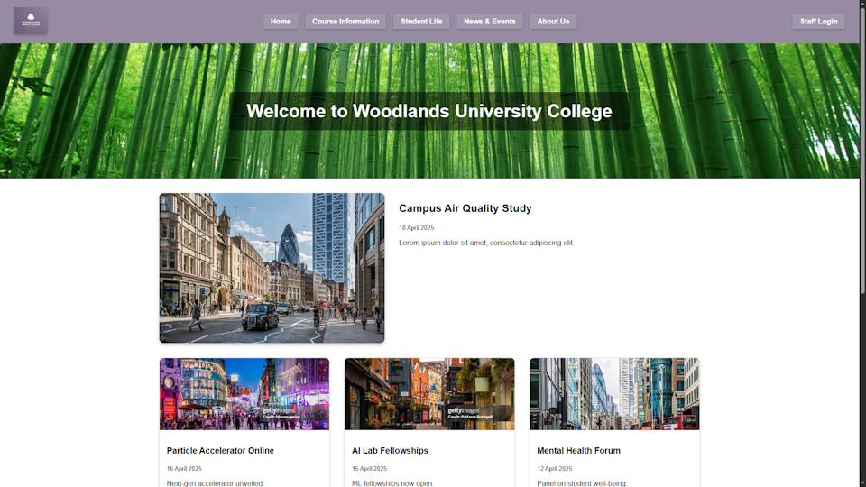

Year Two Group Project - University Website

This project was for an assignment in my second year of university. I was leading a group to design and develop a solution system consisting of a university records management system, and a customer-facing university website for a simulated client. I led client eliciation and user-testing trials, managed the team, set up the programming environment and database, and helped to develop the front-end of the records management system, and the back-end. The solution used Docker, PHP and Nginx. I earnt 82% on the assignment, which is an A-grade equivalent.
You can download the project here.